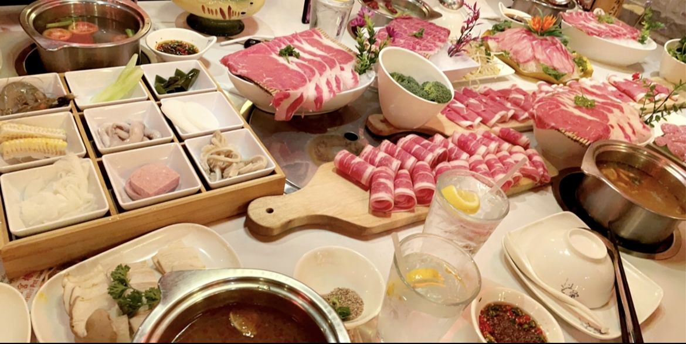

Asian Culinary Institute
About Us

Welcome to the Asian Culinary Institute, where we invite you to start on a culinary journey through the vibrant and diverse flavors of Asia. Situated in the heart of Orange County, California, USA, our cooking school is a place for food enthusiasts, whether you're a novice cook or an experienced chef seeking to expand your culinary expertise.
Our Mission
At the Asian Culinary Institute, our mission is simple: to celebrate the rich culinary heritage of Asia by providing hands-on cooking experiences that are as educational as they are enjoyable. We strive to empower our students with the knowledge and skills to master the art of Asian cooking, all while fostering a sense of community and appreciation for cultural diversity.
Areas of Studies
Whether you're craving the bold spices of Sichuan cuisine, the delicate flavors of Japanese sushi, or the aromatic herbs of Thai curries, we have a class for you. Our comprehensive curriculum covers a wide range of Asian cuisines, including but not limited to:
- Chinese
- Japanese
- Thai
- Korean
- Vietnamese
- Maylasian
- Indonesian
What Sets Us Apart
From Novice to Master
"No one is born a great cook, one learns by doing" - Julia Child